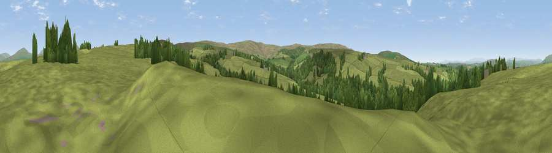

Viewpoint near Low Bentham
#19914 in England · top 58% of its area beats it · near Low Bentham · path 90 mWhere it is
The exact computed spot (SD 65175 65925). Click the marker for map links.
Public access: the nearest public right of way is about 90 m away — the final stretch may cross private land. Computed from Natural England's CRoW access layer and OpenStreetMap rights of way — not the legal definitive map. Always verify locally.
The view, rendered

A 360° render of this exact spot computed from the terrain model, tree cover and land cover — summer colours, afternoon light, calibrated against photographs of famous viewpoints. Real trees, hedges and buildings will differ in detail.
The panorama
Grey silhouette: terrain skyline in each direction (720 bearings, Earth curvature and refraction included). Dashed green: skyline with trees (+15 m) and buildings (+8 m) as obstacles. Blue strip: how far the ground is visible on each bearing.
Where the view opens
Wedge length = distance to the farthest visible ground on that bearing (vegetation-aware). Rings at 10, 25 and 50 km.
What fills the view
78% grassland · 22% woodland
Angular shares of the visible panorama (visual magnitude), not map area. Landscape diversity 0.23 (0–1 Shannon).
Key numbers
More beautiful places nearby
The staircase of upgrades: each row has a higher view potential than everything closer. Driving times are estimates from straight-line distance, calibrated against real road routing — check an actual route before setting out.
| Place | Direction | Drive | Score |
|---|---|---|---|
| Viewpoint near Wray | W · 4 km | ~9 min | 58.2 |
| Burnmoor | ESE · 4 km | ~10 min | 69.6 |
| Viewpoint c9228_7386 | SE · 6 km | ~13 min | 71.5 |
| Viewpoint near Wray | W · 6 km | ~13 min | 72.0 |
| Viewpoint near Wray | W · 6 km | ~14 min | 73.8 |
| Viewpoint c9201_7202 | SW · 8 km | ~16 min | 76.1 |
| Viewpoint c9170_7172 | SW · 10 km | ~19 min | 77.0 |
| Little Ingleborough | NE · 12 km | ~22 min | 78.8 |
54.08805, -2.53388 · source: screening · position refined by local search. Computed location — check access rights before visiting.